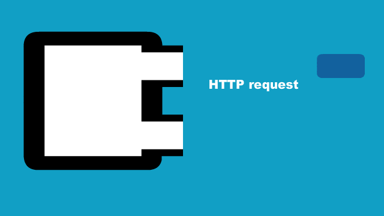
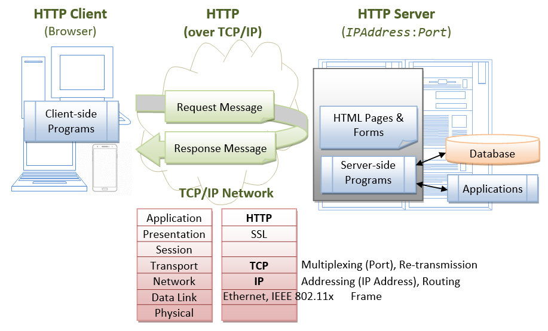
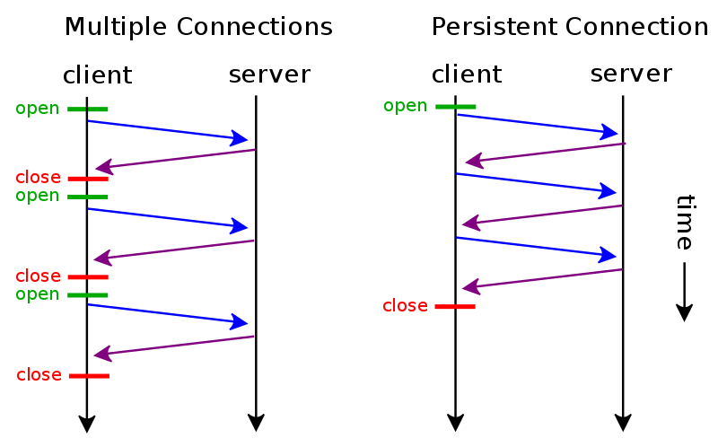

HTTP / HTTPS / HTTP2
History
A screen in an ENQUIRE scheme

Tim Berners-Lee in 1994
TCP/IP stack reference model

What is the HTTP?
HTTP is the basical protocol used by the WWW
Basic features:
Connectionless
Media independed
Statless

Versions of the HTTP

What does it look like ?
What does it look like ?
Request
GET /docs/index.html HTTP/1.1
Host: www.nowhere123.com
Accept: image/gif, image/jpeg
Accept-Language: en-us
Accept-Encoding: gzip, deflate
User-Agent: Mozilla/4.0 (compatible; MSIE 6.0; Windows NT 5.1)
(blank line)
Request consist of
- Method
- Uniform Resource Identifier (URI)
- HTTP version minor/major
- Header Fields
GET /docs/index.html HTTP/1.1 // Method / URI / version
Host: www.nowhere123.com
Accept: image/gif, image/jpeg // Request Header Fields
Accept-Language: en-us // Request Header Fields
Accept-Encoding: gzip, deflate // Request Header Fields
User-Agent: Mozilla/4.0 (compatible; MSIE 6.0; Windows NT 5.1)
(blank line)
First-line of the request:
Method / URI / version
GET /docs/index.html HTTP/1.1
Response
HTTP/1.1 200 OK
Date: Sun, 18 Oct 2009 08:56:53 GMT
Server: Apache/2.2.14 (Win32)
Last-Modified: Sat, 20 Nov 2004 07:16:26 GMT
ETag: "10000000565a5-2c-3e94b66c2e680"
Accept-Ranges: bytes
Content-Length: 44
Connection: close
Content-Type: text/html
X-Pad: avoid browser bug
It works!
Responses consist of
- The version of the HTTP protocol they follow.
- A status code
- A status message
- HTTP headers
- Optionally a body containing resourse
Status code
- 1xx (Informational): Request received, server is continuing the process.
- 2xx (Success): The request was successfully received, understood, accepted and serviced.
- 3xx (Redirection): Further action must be taken in order to complete the request.
- 4xx (Client Error): The request contains bad syntax or cannot be understood.
- 5xx (Server Error): The server failed to fulfill an apparently valid request.
Status code: 404
Page not found
Request Method:
GET
HEAD
POST
PUT
DELETE
CONNECT
OPTIONS
TRACE
Request Method:
GET: is used to retrieve information from the given server using a given URI.
POST: is used to send data to the server, using HTML forms.
PUT: Replaces all the current representations of the target resource with the uploaded content.
DELETE: Removes all the current representations of the target resource given by URI.
Keep alive connection
GET /test.html HTTP/1.0
Connection: Keep-Alive
(blank line)
HTTP/1.1 200 OK
Date: Sun, 18 Oct 2009 10:47:06 GMT
Server: Apache/2.2.14 (Win32)
Last-Modified: Sat, 20 Nov 2004 07:16:26 GMT
ETag: "10000000565a5-2c-3e94b66c2e680"
Accept-Ranges: bytes
Content-Length: 44
Keep-Alive: timeout=5, max=100
Connection: Keep-Alive
Content-Type: text/html
It works!
keep-alive connection
is one instead of many connections
HTTPS is
Secure version of HTTP
Uses:To protect transactions (banking, shopping...)
HTTPS is
encrypted
using TLS or SSL